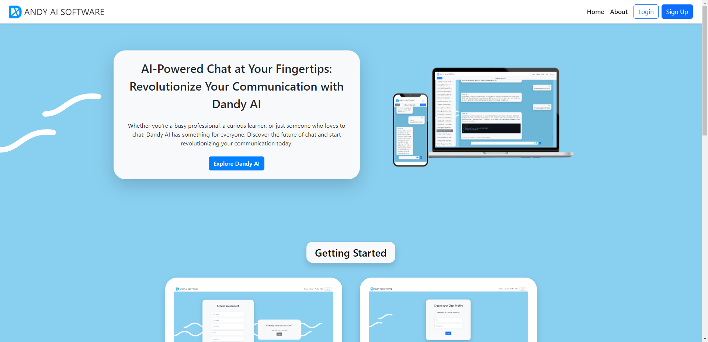
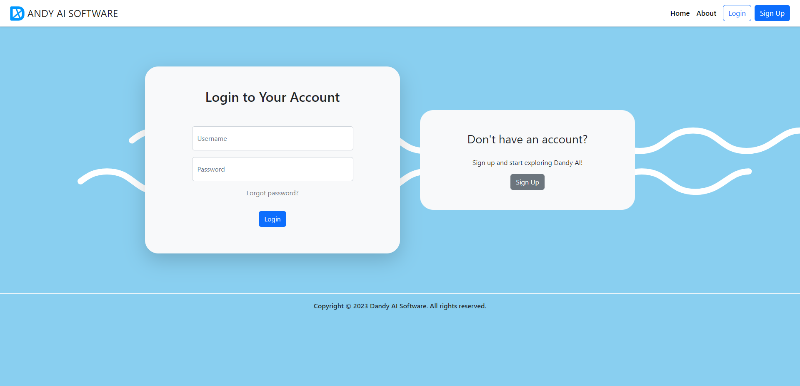
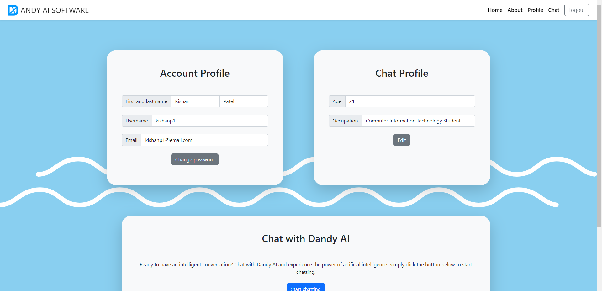
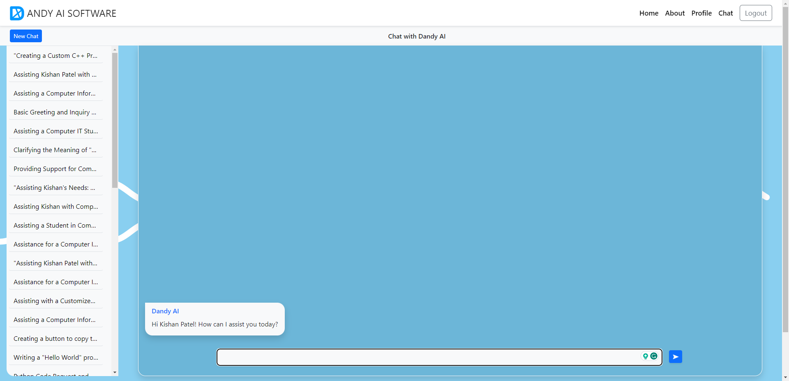
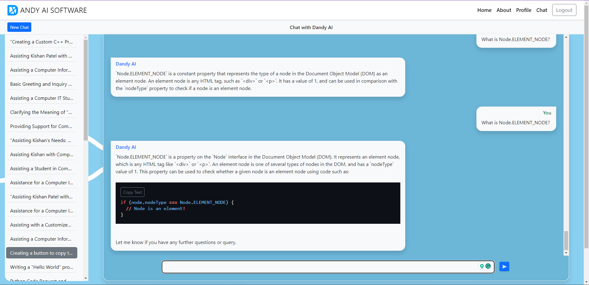

The "Dandy AI Software" is an AI chat system website with a custom profile, powered by the GPT 3.5 API. This project showcases my expertise in Django, Python, PyCharm, HTML, CSS, JS, Bootstrap, Git, and Github.
With a focus on user experience, I created an intuitive and interactive chatbot platform. Users can engage in dynamic conversations, utilizing the power of the GPT 3.5 API to provide personalized responses. The website features a custom profile for each user, enhancing the personalized experience.
Throughout development, I tackled various challenges, employing my problem-solving skills to enhance the chat system's functionality. By utilizing cutting-edge technologies and implementing efficient algorithms, I ensured smooth and seamless interactions for users.
The "Dandy AI Software" aims to deliver an engaging and user-friendly chatbot experience, making it a valuable tool for various applications. It has received positive feedback from users, with its intuitive interface and comprehensive features.
On this portfolio page, you will find screenshots and a video demonstration showcasing the visually appealing design and interactive nature of the chat system.
By exploring this project, you can gain insight into my proficiency in web development, AI integration, and user-centric design principles.




